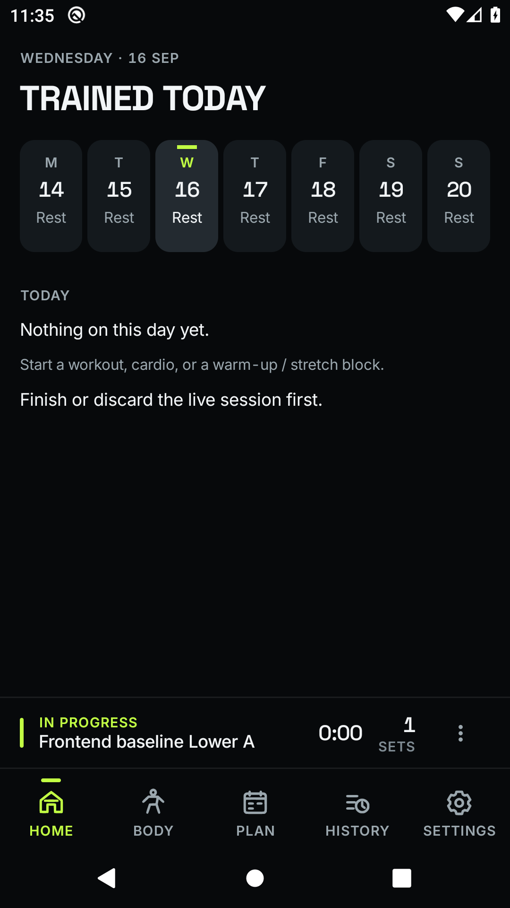
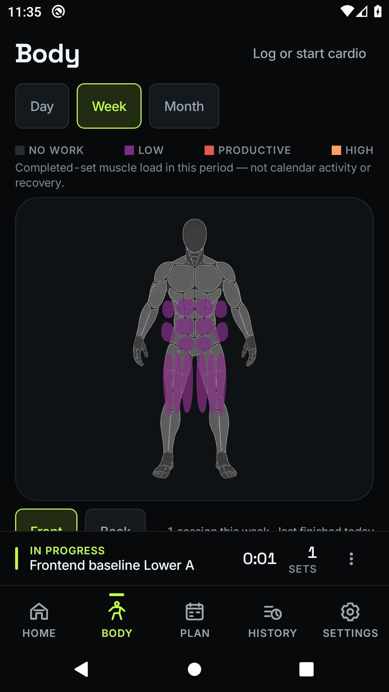
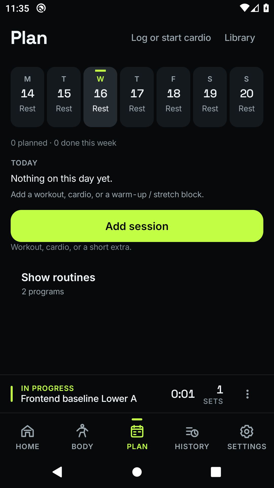
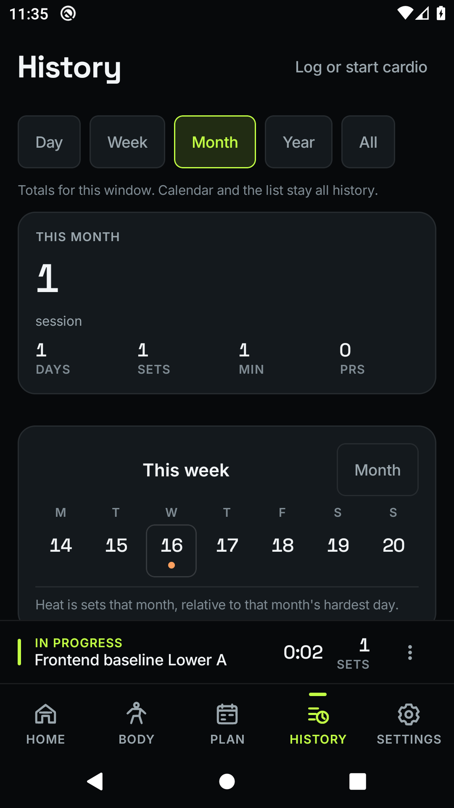

Temper · frontend programme · packet 0
The native starting point.
View Packet 1: implemented controls and navigation
Captured from the actual Android app using fixture data, a completed workout, and a live session. These are the current screens before the redesign. The visible layout problems remain assigned to the implementation packets.
Verification, findings and limitations · Implementation programme · Original audit

Home · selected date and live-session chrome

Body · geometry and available-height problems visible

Plan · schedule and reusable routines

History · existing period mismatch to be replaced
 Settings · grouped controls and persistent activity
Settings · grouped controls and persistent activity
What the evidence establishes
Real MainActivity, navigation and Room data on API 29; 1080 × 1920 pixels at 420 dpi. Full device captures include system bars. Page-specific readiness checks precede capture. See the profile manifest.
These whole-device observations use the real civil clock. Separate renderer-specific golden references compare controlled screen states. No physical-phone accessibility or performance claim is made by an emulator screenshot.